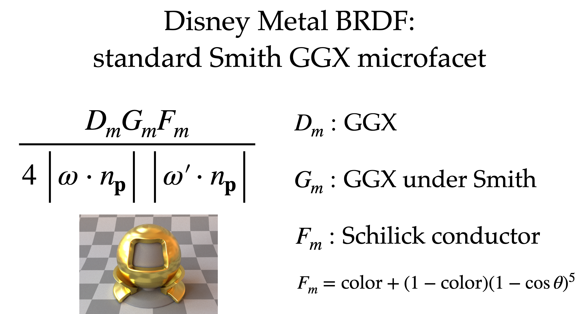

UCSD CSE 272 : Advanced Image Synthesis --- intro & simple BSDF part
- UCSD CSE 272 : Advanced Image Synthesis --- intro & simple BSDF part
intro
course overview
smallpt : path tracing in 30 minutes
What is the color of a pixel?


what‘s more

lajolla
geometry primitive
struct Sphere : public ShapeBase {
Vector3 position;
Real radius;
};
struct TriangleMesh : public ShapeBase {
/// TODO: make these portable to GPUs
std::vector<Vector3> positions;
std::vector<Vector3i> indices;
std::vector<Vector3> normals;
std::vector<Vector2> uvs;
/// Below are used only when the mesh is associated with an area light
Real total_area;
/// For sampling a triangle based on its area
TableDist1D triangle_sampler;
};
// To add more shapes, first create a struct for the shape, add it to the variant below,
// then implement all the relevant functions below.
using Shape = std::variant<Sphere, TriangleMesh>;
next event estimation
- in addition to cosine-weighted hemisphere sampling, also sample a point on light

light sampling

struct pdf_point_on_shape_op { Real operator()(const Sphere &sphere) const; Real operator()(const TriangleMesh &mesh) const; const PointAndNormal &point_on_shape; const Vector3 &ref_point; };
multi importance sampling


textures
- 用一阶Taylor展开来根本的解释mip map level原理


- path tracing 怎么计算偏导数 ```cpp /// We adopt an approach for ray differentials /// that is used in Renderman. /// See Section 6.6 in "RenderMan: /// An Advanced Path Tracing Architecture for Movie Rendering" /// https://graphics.pixar.com/library/RendermanTog2018/paper.pdf /// The idea is to simplify Igehy's ray differential by only /// storing two quantities: a "radius" that describes positional /// differential, and a "spread" that describes directional differential.
/// For glossy/diffuse surfaces, Renderman used a heuristics based on the /// PDF of the sampling direction and use larger spread for low PDF. /// Here we use an even simpler heuristics: we linearly blend /// between the specular spread and a constant based on roughness. struct RayDifferential { // Radius is approximately (length(dp/dx) + length(dp/dy)) / 2 // Spread is approximately (length(dd/dx) + length(dd/dy)) / 2 // p is ray position, d is ray direction. Real radius = 0, spread = 0; // The units are pixels. }; ```
shading normals
 chrome-extension://cdonnmffkdaoajfknoeeecmchibpmkmg/assets/pdf/web/viewer.html?file=https%3A%2F%2Fjo.dreggn.org%2Fhome%2F2021_terminator.pdf
chrome-extension://cdonnmffkdaoajfknoeeecmchibpmkmg/assets/pdf/web/viewer.html?file=https%3A%2F%2Fjo.dreggn.org%2Fhome%2F2021_terminator.pdf
embree
BSDF
how to obtain BSDF

build a model for BSDF

Microfacet theory

- normal distribution function

- microsurface geometry profile


- Fresnel --- ratio of reflection

- multiple scattering


Uber BSDF
This “Uber” BSDF includes multiple layers to create a wide variety of materials.
Uber BSDF

Disney BSDF

- diffuse


- metal & clear coat 
- glass
- sheen

Autodesk Standard Surface

Unreal Engine 4 Physically-based Material

Normal/Displacement Map Filtering
mipmap normal map --- using NDF

principle
核心思想是通过局部的normal map 来推导出NDF分布

solutions
LEAN


{kind=link}
{kind=link}
{kind=link}
{kind=link}
{kind=link}
{kind=link}
{kind=link}
{kind=link}
{kind=link}
{kind=link}
{kind=link}
{kind=link}
{kind=link}
{kind=link}
{kind=link}
{kind=link}
{kind=link}
{kind=link}
{kind=link}
{kind=link}
{kind=link}
{kind=link}
{kind=link}
{kind=link}
{kind=link}
{kind=link}
LEADR
displacement and reflectance mapping

Yan Ling-Qi --- 还原复杂normal下的高光
 核心思想是 count texels on the normal map given and ω ω′
实际是用Guassian distribution来拟合normal朝向的权重
核心思想是 count texels on the normal map given and ω ω′
实际是用Guassian distribution来拟合normal朝向的权重

procedurally generate normals

more researches